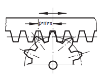
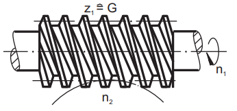
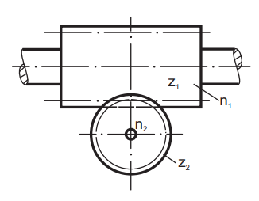

El Accionamiento por cremallera y por tornillo sin fin son métodos de transmisión de movimiento en sistemas mecánicos.



Para el Accionamiento por cremallera y por tornillo sin fin, se calcula la carrera de cremallera, accionamiento por tornillo sin fin, e interdependencias.
Sus elementos son:
A continuación, te invito resolver el siguiente ejercicio sobre este tema:
La formula involucrada es:
donde:
\(z\) = dientes de la cremallera
\(m\) = modulo
El accionamiento de la cremallera es: